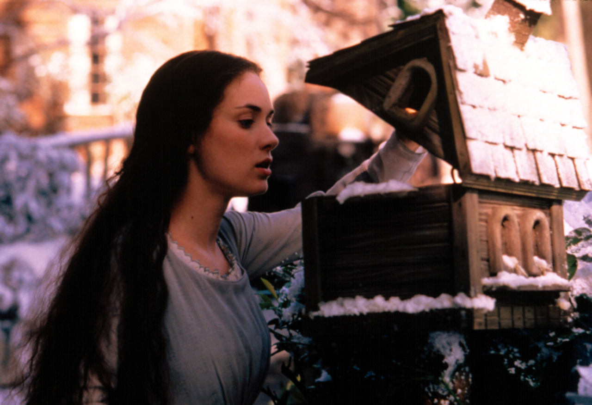
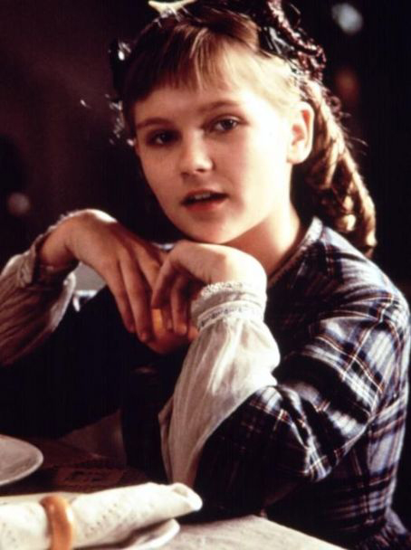
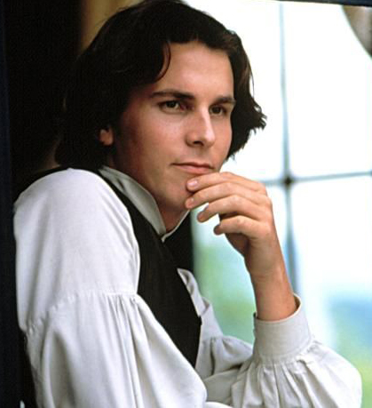
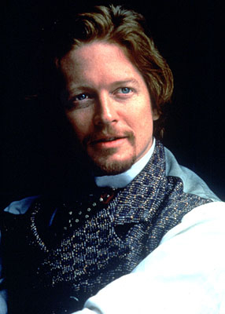

|
Summary
Robin Swicord's Little Women is a delightful film adaptation of Louisa May
Alcott's novel about the joys and struggles of a family of four sisters set in Victorian
New England. The film celebrates the cherished bonds of family relationships, as well as
explores the confining social mores for women in the post-Civil War America.
From Novel to Screenplay
Actress Winona Ryder was instrumental in turning the Louisa May Alcott novel into its
film version. The actress, who read the book when was twelve years old, first discussed
the possibility of remaking the film with producer Denise Di Novi, with whom she'd worked
on "Edward Scissorhands." Di Novi has since remarked: "I don't know if we could have made
Little Women if not for her interest."
Di Novi then shopped around for scripts and was immediately drawn to Robin Swicord's
screenplay. Ryder recalls: "One day [Di Novi] called me up and said, 'You're not going to
believe this, but I got an adaptation of [Little Women], and it's really good. It's really
not like what we thought it would be.,'" For one thing, Swicord's script, in contrast
to the earlier film versions, focused no longer on the marriage prospects of the March
girls, but rather on how how Jo wants to be a writer.
Lastly, Ryder and Di Novi chose Australian born Gillian Armstrong, who had just
finished "My Brilliant Career," an acclaimed period film about a young woman's choice to
become a writer rather than marry a rich suitor (sound familiar?), to direct.
However, Armstrong initially declined the offer to direct, thinking that she didn't
want to do a movie so similar to her last piece and that an American should transform the
classic story. When she changed her mind, she set to familiarizing herself with American
history: "The first thing I did after agreeing to do it was read the entire history of the
Civil War--I needed to know what was going on in America at the time!"
Ryder, who believes that young women need upstanding female role models, wanted the
film to be "a gift for girls": "I really wanted to give something to girls who are sick of
the stupid movies that are coming out now. I know a lot of younger girls who tell me, 'Why
do people think we want to see movies about hookers?' I talked to these girls who were
around twelve years old, and they thought 'Pretty Woman' was a silly movie. They said,
'Come on, we're smarter than that. We want to see movies where the girls aren't so
stupid.'"
Ryder also remarks that more positive portrayals of teenagers like the March sisters
are much needed today: "I think we could use a movie like this, especially in this time
where it's so hip to be violent, and everyone is trying so hard to be cool. Look at those
new Calvin Klein ads. The models look so skinny and upset, as opposed to the poster for
Little Women where everyone looks fat and happy. I'd much rather spend time with those
fat, happy people... I know this is a well-made movie and a classic story. It's so nice to
see a movie where the people talk to each other, and where people fall in love and triumph
over life's problems."
Armstrong sought to make a film which would be a welcome alternative in a movie
industry largely dominated by blockbusters: "I think we have dramatic conflict, but it's
more in the characters and the things they experience growing up--the questions like,
'Who should I love?' or 'What should I do with my life?' I think it's terrible that
everyone believes movies are about good guys and bad guys. Life isn't about that. Life is
about the things we deal with in this film."
Armstrong had to find her childhood copy after the screenplay for the film was sent to

Director Gilliam Armstrong on the set of Little Women
|
her: "I had a feeling I'd kept the book from my childhood [so] I went and had a look and
there it was on the bottom of a shelf... I opened it up and it said, 'To Gillian, Happy
11th Birthday!' Of course, I loved it when I read it and like most people, I identified
with Jo." However, Armstrong admits that her favorite novel was actually Anne of Green
Gables.
Armstrong was pleasantly surprised at the relevance of Alcott's novel: "People have
told me I'm a '90s feminist putting words in the mouths of these fictional characters, but
the things brought to the foreground in our film are there in the book.... [Alcott] wrote
so honestly about growing up as a young woman, and at that time nobody had ever written
about women like that. Most Victorian literature was very sentimentalizing. Even though
she wrote about her sisters, Louisa captured everything about being a young girl and a
sibling. They're not necessarily nice, they fight, they're vain. I think that honesty has
stood the test of time. We're all still the same."
Armstrong wanted to remain as true to the period that the novel was set: "[The
screenplay] was written with a wonderful feel for period, but there's still a sort of
complicity to the language that makes it feel period but still sound real and
contemporary. I wouldn't like [the] readers to think it's a lifeless, boring period [film
version] because Louisa wrote very honestly about growing up and about all those painful
things about childhood and going out into the world... She also wrote with great fun and
life. That is the thing that to me is very contemporary."
Armstrong hoped to make a film version which would be different from its forerunners:
"We're working against the image this book has developed over time. "People assume it's
sweet and old-fashioned, but this is not a cute little movie for little girls. Yes, it is
a film about Louisa May Alcott's thoughts on very intimate parts of a woman's
life--adolescence and finding first love--and I'm pleased at the prospect of young girls
being exposed to those thoughts. But there's much, much more of the book, and I'll be even
more pleased if men discover there's something there for them too."
Armstrong's version is the sixth film adaptation. The first, a silent film, was
released in 1918. The second version starred a young Katherine Hepburn as Jo in 1933.
MGM's version in 1949 starred screen legends June Allyson as Jo and Elizabeth Taylor,
Janet Leigh and Margaret O'Brien as her sisters.
Auditions and Casting
Because Winona Ryder was the first March sister to be cast, director Gillian Armstrong
sought to find actresses who would be compatible: "We started with Winona, so we then had
to surround her with people who looked like sisters. Also, each one has a very individual
character, so we had to find someone we felt who was the true Meg, the more conservative
and more romantic of the family. Then to find a mischievous, slightly wise Amy, and a very
gentle Beth with inner spirit. So it was a long time, but I'm very proud of our cast. They
worked very well together."
Christina Ricci auditioned for the role of the young Amy, but Armstrong opted for
Kirsten Dunst, who at the age of twelve, had already been nominated for a Golden Globe
Award.
Dunst and Trini Alvarado (Meg March) were cast in part because of their heart-shaped
faces, emblematic of traditional beauty in the Victorian age.
As a long-time fan of the novel and previous film versions, Alvarado was hoped for a
chance to be cast as one of the March sisters: "Every time that Little Women was
announced in television, I was there watching. I had seen the film versions with Katherine
|

Winona Ryder in Little Women
|
Hepburn and June Allyson, Elizabeth Taylor and Janet Leigh. And both versions enchanted
me, because I like this story. I read the book when I was ten years old. And when I heard
that they were auditioning for this film, I prayed to God, asking for one audition, so
that I could say that I had tried."
To prepare herself for her audition, Alvarado looked to an earlier film version: "I had
taped the Katherine Hepburn version a long time ago, and I went to my mother's house to
pick the tape to watch and inspire me. It is very beautiful. The style of acting then was
different, but I like the film."
Alvarado remarks that her Latin heritage did not keep her from getting the part of Meg:
"I am Hispanic and Meg... is not a Hispanic, but even so they gave me the part. But I
understand the situation. I understand it because sometimes I see a film about Hispanics,
where none of actors is Hispanic, and I feel bad about that. I'd feel particularly bad if
they hadn't allowed me to audition, when they said that they'd already seen all the
Hispanics in Hollywood, which isn't true."
Claire Danes was virtually unknown (she had finished taping the award-winning
television series, My So-Called Life, but it had not yet premiered) when she was cast
for her first feature film role as Beth March. She was touted by Scott Winant (Producer of
My So-Called Life) who had hoped to direct Little Women. Although he lost out to
Armstrong, Ryder caught Danes on the television show and began lobbying for Danes.
Casting for the male characters proved to be a serious challenge, because few American
actors were interested in the sentimental, woman-centered film. However, one actor, Irish
born Gabriel Byrne, kept calling Armstrong to be considered. Although Armstrong could not
picture him as either the young Laurie or the German professor Friedrich Bhaer, she agreed
to see him because he was so persistent. Armstrong recalls: "Gabriel said, 'My mother read
Little Women to me and my siblings. It was like the Beatles--we all fought over who was
our favorite March girl.'" His enthusiasm won him the part of Professor Bhaer.
Eric Stoltz, also a Golden Globe nominee for his poignant portrayal in the 1985 film,
Mask, signed on to do Little Women for personal reasons: "'Little Women' was for
my nieces, who [were] 8 and 5. Sometimes I like to do a picture just for a family member."
Susan Sarandon also agreed to play Marmee March for family reasons: "I did it for my
daughter. This is a dirty-hemmed, hand-down-the-dress, authentic clothing, politically
accurate, historically accurate rendering of that time and those problems, which strangely
enough are very contemporary in some ways."
On Location
To prepare for their roles as the Victorian sisters, the cast members were required to
take classes in sewing, knitting, dialect and etiquette. It was during these group lessons
that the actresses became friends. Kirsten Dunst recalls: "We had two weeks of rehearsals
that were [actually] all of these classes [on] sewing and knitting and dialect, etiquette
class and dancing... We learned how [people during the Civil War] held their hands at that
time, speech patterns and words they used. We got whole history packets too, about
political things that were happening and everything. So we learned a lot about each other
and the period at the same time."
Of the etiquette classes, Samantha Mathis (Amy March) remarks: "It's very restricting
not being able to gesticulate with your hands. I had to be very refined, especially
playing Amy, who's so into being proper and doing everything the right way."
The set for the Marches home was patterned after Orchard House, Louisa May Alcott's
real-life house that still stands in Concord, Massachussetts today.
Director Gillian Armstrong wanted the costume design to be as faithful to the real
clothing of the period and insisted that all the dresses were made from authentic fabrics
available during the Civil War era: "The last thing I wanted was a period piece that was
nothing but a display of pretty dresses... It was very important that the audience feel
these people lived in the house, that they wore their clothes and that they didn't have
many. They were poor, so there should be a feeling that things were handed down and hemmed
or let down. I think [the costume designers] did an extraordinary job of creating a real
world where the clothes did feel like things people actually wore and not museum dresses."
On the costumes, Trini Alvarado remarks: "It's so obvious why women were thought of as
the weaker sex. I don't know if it was a subconscious desire of designers to hold women
back, but you can't even take a full breath [in these Victorian dresses]."
During her downtime on the set, 12-year old Kirsten Dunst sold lemonade to the cast
members for a quarter a glass: "It was a great way to make lots of money. Susan Sarandon
bought a lot of it. She sent her kids to keep buying lemonade. I'm not sure if they were
|

Kirsten Dunst in Little Women
|
even that thirsty." Dunst earned about $30 and spent it on a backpack!
While filming a scene in which Beth carries a candle up a flight of stairs, Claire
Danes accidentally set her hair (a Victorian wig) on fire! Mathis recalls: "Whoosh! Her
entire hair went up in flames. Winona ran up and put out the flames with her bare hands."
Ryder adds nonchalantly: "I'm a hero. I guess it would have been a cool episode of 'Rescue
911.'"
Ryder was known as the clown on the set, always able to make jokes while straight-laced
in a corset.
Then unknown Claire Danes recalls meeting Ryder on the set for the first time and
feeling a little awkward: "Fame is so bizarre. You meet people like Winona and they're
just people. But then she's worked with the most amazing people, and I don't know how much
to talk to her about it. I mean, I don't want to ask her, 'Was Daniel Day-Lewis really
cool?' Or say something like, 'I heard about Johnny [Depp]--sorry.'"
Ryder took the younger Danes under her wing. One afternoon on the set, Ryder found
Danes sobbing in her trailer, ready to quit the film. She shared with Danes about her own
experiences as a child actress and counseled Danes to stick with acting.
On the atmosphere of the shoot, Alvarado remarks: "There was a lot of estrogen energy
on the set."
Armstrong recalls that the most fulfilling part of finishing the film was having it
screened by male audiences: "There's this terrible preconception among males that their
sisters were reading this terrible gooey girl book. Actually, we were reading about this
troubled misfit Jo, who got everything wrong and had all these conflicting feelings about
her sisters. We've had fantastic reaction from men. The response has been... 'This story
is not that bad at all; We were wondering what they were reading all these years!' The
highlight of my life was when the studio took it to some males and they all cried. All the
men in my sound team cried. I hope that bodes well."
Relationships On and Off the Set
Director Gillian Armstrong was especially delighted that her male actors held their own
with the strong female cast. Of Christian Bale, she remarks: "He is not only a wonderful
actor with great screen presence, but he has a good soul--and that comes through [in the
film]."
A year after Little Women was released, three of the March sisters teamed up in
another woman-centered film, How to Make an American Quilt. However, Winona Ryder,
|

Christian Bale in Little Women
|
Claire Danes, and Samantha Mathis had no scenes together in the latter film. Trini
Alvarado and Eric Stoltz also teamed up in another period film, Sensibility and Sense
(not an adaptation of the Jane Austen novel).
Mathis and Ryder also share something in common in real life: Both have dated actor
Christian Slater.
Danes and Ryder became close friends on the set. Long after Little Women was
released, they keep up a sisterly friendship, as Danes remarks: "We hang out and talk
about boys. Now I'm growing up, so we can be on more of a similar level."
Kirsten Dunst found Ryder to be "loving" and was grateful for Susan Sarandon's
nurturing presence on the set. Dunst bonded with all the actresses in the movie, including
Mathis, who obviously had no scenes with the young actress.
Of Dunst, Mathis remarks: "Kirsten is just so together. And cute! When I was her age, I
had braces and greasy hair, and wasn't as pretty!"
Trini Alvarado remarks of her co-stars: "I have no sisters [in real life]. That's why
when I read the book I liked it so much, because I wanted to have a sister. And now,
working in this movie, I got three."
Of Alvarado, Armstrong remarks: "Trini has such warmth and love about her and was the
perfect counterpart to the self-obsessed and self-absorbed younger sister, Amy, played by
Kirsten Dunst."
The Actors on Their Roles
Although the film's producers wanted Jo to be a self-assured character, Winona Ryder
hoped to bring more complexity to the protagonist: "I saw Jo as a really confused girl who
constantly contradicted her self, but [the producers] saw her as just this totally strong
girl. So I had to fight to play her like that. [Director] Gillian [Armstrong] kept saying,
'Play her strong,' but I really saw her as vulnerable."
Little Women was one of Ryder's many period films: "Apart from 'Reality Bites,'
it's true all my recent films... have been period pieces. But I don't care what year the
movie is set. If I connect to the story and the character, I'll do it... Nowadays, the
period films have more substance and... dialogue. The contemporary ones have to be so cool
and hip and violent. They're pretty to look at but nothing's going on. The period pieces
tend to be about people and what they say to each other, and that appeals to me more."
Ryder also admits that she loves wearing historic costumes!
Director Gillian Armstrong remarks that Ryder's own personality shines through as Jo:
"There's a part of Winona [as Jo] that she has never played before [in previous films]...
She's very alive and vivacious [like Jo]. Winona also writes poetry."
Trini Alvarado (Meg March) received an illustrated edition of Little Women when she was
twelve years old. The actress read the book again when she was fourteen, and has seen all
of the film versions. So she jumped at the chance to be in the film: "This movie is
something I completely wanted to be a part of. I was so drawn to these sisters. I think
the characters really jump out at you, because their experiences are really described so
well. Basically, it's teenage angst. They had to deal with peer pressure, and their
mother, and these questions about getting married so soon."
Although cast as the Meg, the "pretty one," Alvarado admits that she is a "slob" when
it comes to fashion and bought her first black suit for the Little Women premiere:
"I thought to myself, 'It's so odd how we have to dress up on these press junkets.'... I
don't look in the mirror every morning and expect to see that twinkle... I'm much more
likely to notice that I'm getting a zit."
On her character, Alvarado comments: "Amy was the artist, Beth the housekeeper, Jo the
writer. But Meg was only described as the oldest sister. She is quite, like they say,
conservative. She gives a lot of importance to the family, to the laws of the society, to
doing things the way expected of her. She is always scolding her sisters. She dreams of
having her own family, and she succeeds in this dream."
Twelve-year old Kirsten Dunst read Little Women four times before auditioning for the
role of Amy March, and remarks fondly: "I love the book because it's real and about
family. Also Marmee, Susan [Sarandon]'s character, is a very strong feminist. For that
time period, they were a very modern family. All of the other mothers back then told their
|

Eric Stoltz Little Women
|
daughters, 'You have to marry and have children and wear corsets,' and all that. Marmee
supported each girl, whether they wanted to become a writer and not marry or if they
wanted to go ahead and have babies." 38 Dunst admits, however, that she is nothing like
the fashion-conscious Amy: "Amy's totally different from me. She likes being in the 'in'
crowd and dressing up. I hate wearing fancy clothes, and I don't really like going to
social events and parties."
Of his supporting role as John Brooke, Eric Stoltz remarks: "It's a decorative role. I
stand around with facial hair. But it's a terrific cast--a great deal of estrogen. I
adored them, I never wanted to leave, I wanted to be a part of their family."
Armstrong shares at least one thing in common with Jo. Afraid that the public will be
more receptive to a male author, Jo at first publishes under the name of Joseph March.
Similarly, when Armstrong directed My Brilliant Career, the director's credit read "Gill
Armstrong." On her second feature, she restored herself to her rightful "Gillian."
Producer Denise Di Novi was especially fond of the film's portrayal of marriage:
"Marriage was an unavoidable economic reality in that time. Louisa attempted to create a
male character who didn't compromise Jo and respected her mind, and I hope the film leaves
you with the feeling that Jo will continue to write, and that she and her husband will
share a life together as equals. One of the things I love about the relationship between
Jo and Professor Bhaer is that it begins in friendship and develops from there. Those are
the marriages that work and we rarely see them in movies. They prefer to present fantasies
because it's simpler, and the industry knows fantasies make money."
Di Novi also was proud of the family-oriented message of the film in an age where
broken families are prevalent: "Most people today don't have the kind of nurturing family
life central to this story--and that's one of the reasons films like this are necessary.
The film suggests that you can be a flawed human being with troubled relationships, yet
still honor the bond of family."
Movie Secrets
Winona Ryder persuaded the filmmakers to dedicate Little Women to Polly Klaas,
the young girl from Petaluma, California (where Ryder spent much of her childhood) whose
kidnaping and murder in 1993 sparked a public debate about crime and punishment. Ryder had
personally offered a $200,000 reward for information leading to the arrest of Klaas'
abductor. Ryder remarks: "Little Women was Polly's favorite book. I was offered the movie
the day after she was kidnapped, and later Polly's family gave me her copy of Little
Women. For me, [Polly] was very involved in the project."
However, Ryder had to persuade Columbia Pictures to carry the dedication in the
credits: "[Columbia Pictures] promised me it would go in and then they told me two weeks
ago that they didn't want it because it was too depressing. I said, 'But you promised me,
and you promised her family who are coming with me [to the premiere] and I can't tell them
now it's not happening.' They said, 'Well, sorry!' And I said, 'Well, I'm off to do this
press junket for the film--I'd put the dedication in if I were you.'" Needless to
say, Ryder got her way.
Source: Eras of Elegance.
|